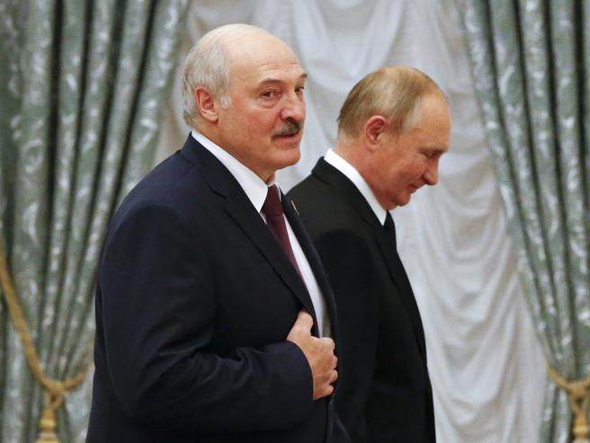
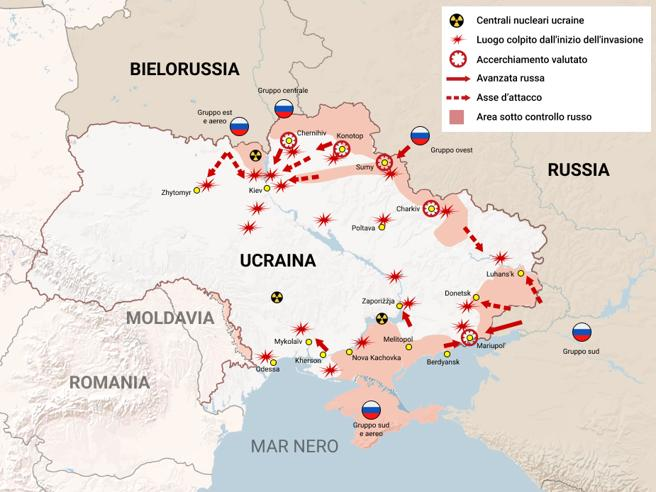
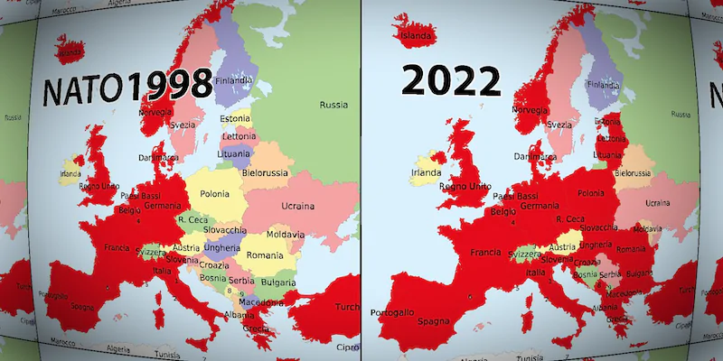
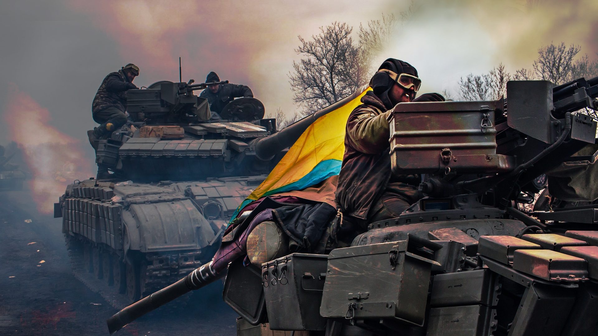

L'attuale crisi fra Russia e Ucraina inizia a dicembre quando Mosca ammassa truppe al confine con l'Ucraina. Secondo stime americane, si tratta di oltre 100mila uomini, fra cui 83 battaglioni tattici, ciascuno con 750 soldati, a cui si aggiungono tutto il supporto aereo, medico e logistico necessario al funzionamento di un esercito. Nella vicina Bielorussia, uno stato autoritario strettamente alleato con Mosca, sono arrivati 30mila soldati russi, aerei e missili Iskander su piattaforme mobili, in grado di colpire Kiev, la capitale ucraina. Navi da guerra russe sono state inviate nel mar Nero.
Il presidente russo Vladimir Putin non ha nascosto in alcun modo questi movimenti, esibiti tramite video di propaganda. Inizialmente per giustificare questo movimento di soldati si è parlato di esercitazioni militari, ma bastava guardare una cartina geografica per capire come un così alto numero di armi e uomini al confine rappresentasse una grave minaccia per l'Ucraina che - effettivamente - è stata poi attaccata su più fronti. Come previsto, l' attacco militare è scattato dopo la metà di febbraio, quando sono finite le Olimpiadi di Pechino (per non irritare la Cina), ma prima della fine di marzo. Un'invasione con i carri armati è infatti possibile solo fino a quando il terreno rimarrà duro per il freddo invernale: una volta iniziato il disgelo i tank rimarrebbero bloccati nel fango.
Putin pone l'intera questione sul piano della sicurezza della Russia, a suo dire minacciata dalla vicinanza della Nato. E ha presentato due richieste che sapeva sarebbero state respinte: far uscire dalla Nato i paesi dell'Europa dell'Est e garantire che l'Ucraina non entrerà mai a farne parte. La Nato risponde che è pronta a negoziare la dislocazione di missili e soldati sul proprio fianco est, a patto che anche Mosca ritiri le sue truppe dai confini dell'Ucraina. Per capire meglio la crisi e i possibili scenari futuri, bisogna ora fare un passo indietro. Ucraina, Russia e Bielorussia sono unite da forti legami culturali e molti dei loro cittadini sono fra loro imparentati. Prima di separarsi in tre nazioni distinte con il crollo dell'Urss nel 1991, le 'tre sorelle slave' sono state unite politicamente per secoli sotto l'impero zarista e poi nell'Unione Sovietica. Putin ripete spesso che russi e ucraini sono lo stesso popolo. Ma il suo scopo è prima di tutto mantenere l'Ucraina sotto il controllo di Mosca, mentre la maggioranza degli ucraini guarda invece al modello dell'Europa occidentale. Ai primi del 2014, la rivolta di piazza Maidan ha portato alla cacciata del presidente filorusso Viktor Yanukovych, sottraendo il governo di Kiev all'influenza diretta di Mosca. Putin ha reagito con l'invasione e l'annessione della Crimea nel febbraio dello stesso anno. E ha poi alimentato una rivolta armata separatista nella regione di confine del Donbass, dove i ribelli filorussi hanno proclamato due repubbliche autonome a Donetsk e Lugansk. Il conflitto in questa regione è già costato almeno 14mila morti e ancora non è risolto.
Cosa potrebbe succedere ora? L'obiettivo di Putin di controllare il più possibile politicamente l'Ucraina è chiaro, ma nessuno sa quali potrebbero essere le sue prossime mosse. Se un'invasione su larga scala poteva sembrare un'ipotesi rischiosa, perchè l'Ucraina è un paese molto vasto e gli ucraini sono decisi a difendersi, ora la guerra è un dato di fatto. Una guerra fratricida dagli esiti incerti. Già da mesi è in corso un'offensiva di fake news sui social, con accuse di violazioni dei diritti umani nei confronti degli ucraini russofoni, e Washington ha accusato Mosca di preparare un falso incidente da usare come pretesto di un attacco. La speranza è che la crisi possa essere disinnescata attraverso la via diplomatica, con una soluzione che salvi la faccia a Mosca, salvaguardando l'Ucraina. Putin forse si aspettava una reazione più debole dall'Occidente ma le severe sanzioni decise dall'Europa metteranno in grave difficoltà la sua economia. Questa crisi sottolinea ancora una volta il problema della dipendenza energetica dell'Europa. Il 40% del gas consumato dall'Unione Europa proviene dalla Russia. Alle pesantissime sanzioni europee Mosca potrebbe reagire tagliando le forniture con conseguenze per la maggior parte dei cittadini europei. Non è detto che ciò accadrà, perchè anche la Russia ci rimetterebbe dal punto di vista economico. Tuttavia il rischio è un campanello di allarme che spinge l'Europa a diversificare le proprie fonti di energia, puntando in particolare su quelle rinnovabili.
